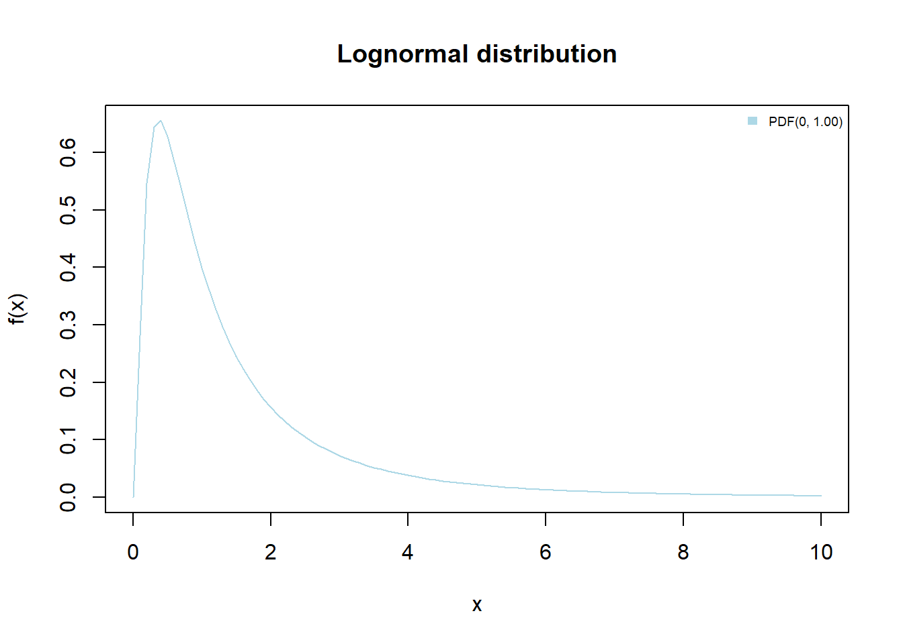
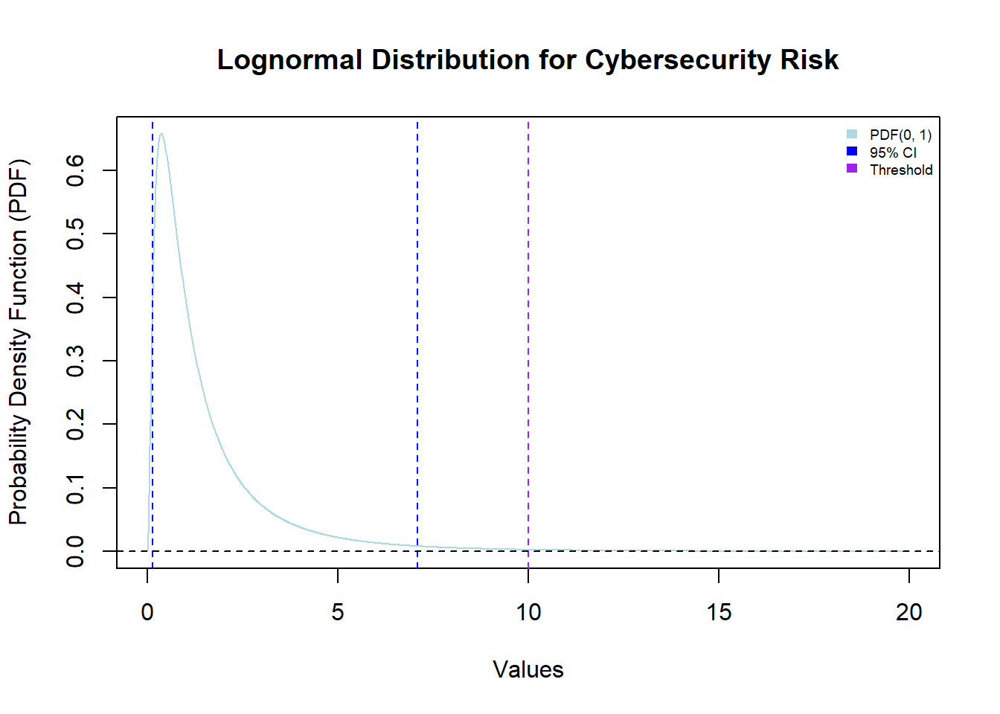

Cyber security risk assessments with lognormal distributions
The lognormal distribution is a continuous probability distribution that can only take positive values. It describes the distribution of a random variable \(X\) if the random variable \(Y = ln(X)\) transformed by the logarithm is normally distributed.
Suitability for operational risk management
The lognormal distribution is often used for operational risk management due to its ability to model the right-skewed and heavy-tailed nature of operational risks such as cyber security risks.
Here are some of the reasons why the lognormal distribution is popular in operational risk modeling:
Skewness: It captures the fat-tailed nature of operational losses.
Non-negative values: Operational risk events are typically associated with losses, and the lognormal distribution ensures that the values generated are always positive.
Multiplicative nature: Operational risks are often caused by multiple factors that interact in a multiplicative way. The lognormal distribution is consistent with this multiplicative model of risk, because it is a product of independent random variables.
Empirical evidence: The parameters of the lognormal distribution can be estimated from historical operational loss data using standard statistical techniques.
Well accepted and understood: The lognormal distribution is an established distribution in statistics and risk management, and it is widely accepted by regulators.
Proven reliability: Studies have shown that the lognormal distribution can be used to predict operational losses with reasonable accuracy.
Percentile Range Estimation: The lognormal distribution is suitable for estimating the percentile range of the loss distribution, which is essential for risk assessment.
Despite its advantages, the lognormal distribution is not always the best choice for operational risk modeling. In some cases, other distributions, such as the Gamma or Pareto distributions, may be more appropriate.
Example 1
Consider a cyber risk with a lognormal distribution (parameters see below).
What is the risk that the loss associated with the cyber risk will be greater than the threshold?

Lognormal distribution parameters: Mean: 0 Sigma: 1 Threshold: 10 Cyber security risk: 0.0106511 95% confidence interval (lower boundary): 0.1408584 95% confidence interval (upper boundary): 7.099327